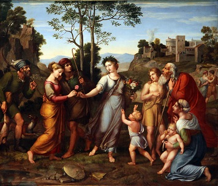

История изобразительного искусства
В эпоху древних средиземноморских цивилизаций, включая культуру греческой, римской и византийской культур, а также средневековое романское и готическое искусство, художники считались просто умелыми рабочими, такими как искусные декораторы или резчики. Только в эпоху Возрождения профессия «художника» была поднята на новый, более высокий уровень, отражающий недавно осознанную важность элемента «дизайн».
Первобытный мир
Тяга к рисованию проявилась у человека давно. Первобытные люди рисовали
на стенах пещер палочками и веточками. Они пытались изобразить те явления,
которые их окружали – это огонь, вода, различные стихии, небо. Более-менее
осмысленные рисунки стали появляться у неандертальцев и кроманьонцев.
В глубокой древности для искусства человек использовал подручные материалы
— камень, дерево, кость. Позже он открыл для себя первый искусственный
материал — огнеупорную глину — и стал активно применять ее для изготовления
посуды и скульптуры. Бродячие охотники и собиратели пользовались плетеными
корзинами — они удобнее в переноске. Глиняная посуда — признак постоянных
земледельческих поселений. И в живописи, и в скульптуре первобытный человек
часто изображал животных.
Античность
Художественное наследие Древней Греции и Древнего Рима — архитектура,
скульптура, живопись, декоративно-прикладное и ювелирное искусство —
поражает своим богатством и многообразием. В нем ярко выразились
эстетические представления, нравственные идеалы и вкусы, характерные для
античной рабовладельческой цивилизации, завершившей многовековую историю
древнего мира. Творцами античной культуры были древние греки, называвшие
себя эллинами, а свою страну — Элладой. Эпоха античности дает нам больше
примеров сохранившихся произведений.
Тогда было принято раскрашивать красками скульптуры, в частности,
изображения людей и животных. Со времеем краска, конечно, стерлась,
и скульптуры, которые мы видим в музеях – белого и желтого цветов.
Средние века
Эта эпоха характеризуется доминированием христианской религии в
мировоззрении большинства населения. Вся жизнь человека служила
прославлению Господа, и поэтому искусство, в том числе и изобразительное,
было нацелено на изображение Бога и святых. Доминирует иконопись –
изображения для церквей. Церкви становятся произведениями искусства,
потому что в их украшении и росписи принимают участие лучшие художники
того времени. Важную роль в распространении изобразительного искусства
играют монастыри, которые служат не только местом жизни монахов, но и местом
сбора деятелей культуры.
Возрождение
Эпоха Возрождения в человеческой цивилизации пришлась на тринадцатый
- шестнадцатый века после Рождества Христова, и в это время начал происходить
бурный расцвет во всех сферах человеческой культуры. Изобразительное
искусство получило огромное развитие. Появились такие художники, как Леонардо
да Винчи, Джорджоне, Рафаэль. Их манера исполнения максимально приближена
к реализму. А мотивами для написания картин служат не только библейские
сюжеты, но и мотивы Древней Греции и Рима. Причем художники показывают не
бледных аскетов, а здороывх пышнотелых людей во всей красе. Не боятся они
изображать обнаженную женскую натуру, в частности, Боттичелли рисует
красавиц Венер.
Девятнадцатый век
Этот век характеризуется бурным развитием фабричного производства, и
появлением разных направлений в изобразительном искусстве. В первой половине
19 в. формируется романтическое искусство. Во второй половине 19 в. художники
обращаются к все больше к действительности, изображают образы из современной
повседневной жизни. Возникают бытовые картины. В искусстве преобладает
реализм, который представляет собой параллель критического реализма в
литературе, отображая многие неприглядные стороны повседневности. На рубеже
19 и 20 столетий сложился стиль, затронувший все виды искусства, стиль-модерн,
проявляющий себя в символике образов, отходе от изображения наблюдаемой
реальности.
